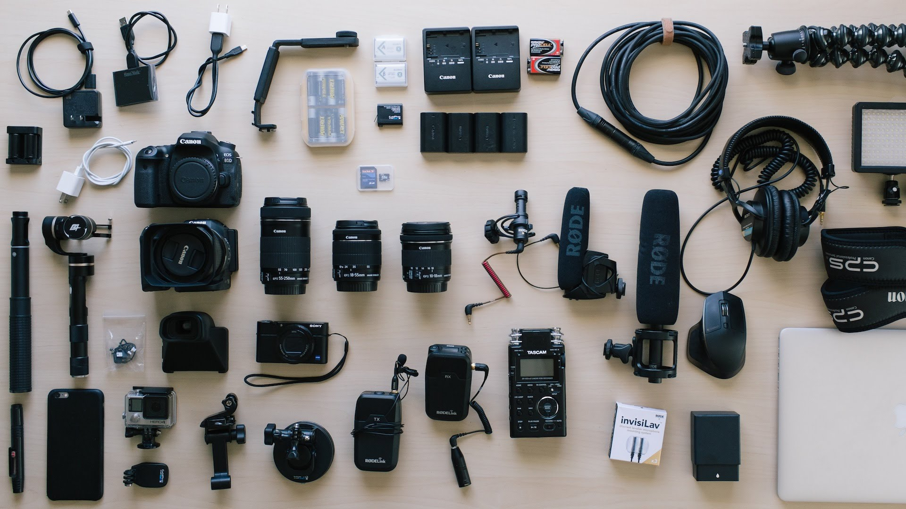

Home
People are visual creatures. They can spend hours on Netflix and YouTube, but when it comes to reading news sites or blogs, they'll often get bored and click away after a minute or two.
Clever internet marketers have taken notice, and have responded accordingly, shifting their strategy to focus on video content.
You can make a home studio with material that you already own, otherwise invest a few dollars here and there to up the production quality.
